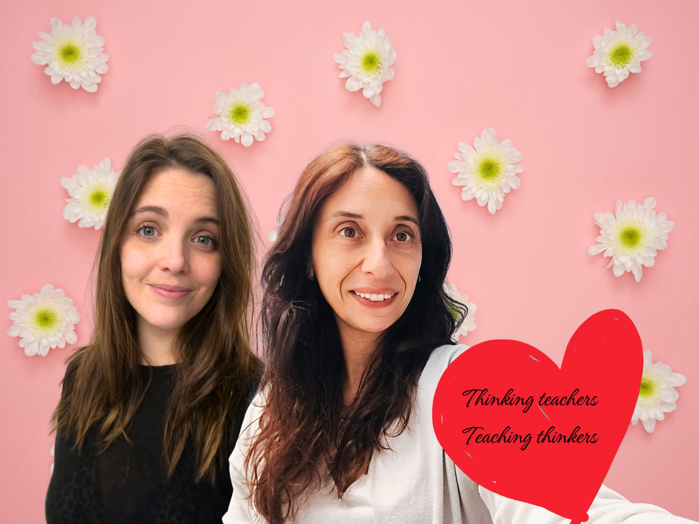

About us
Anna and Laia bring a warm, recognisable human layer to the project.
The real assets make Anna and Laia clearly identifiable as the visible faces behind Pim Pam Teachers. This page stays close to that evidence and avoids inventing unverified biographies.
- Warm, human tone.
- Active and thoughtful pedagogical approach.
- Strong attention to visual clarity.
- Commitment to making teaching processes easier to understand.

The @pimpamteachers reference remains as part of the project's real identity.